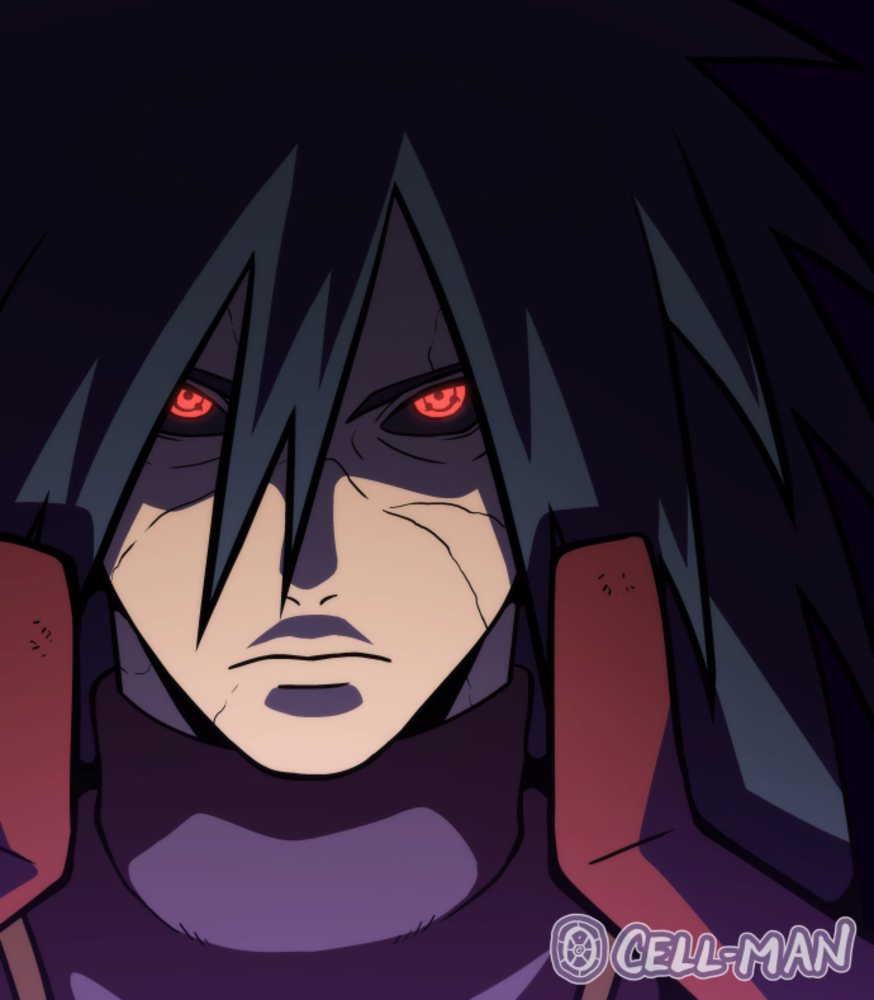
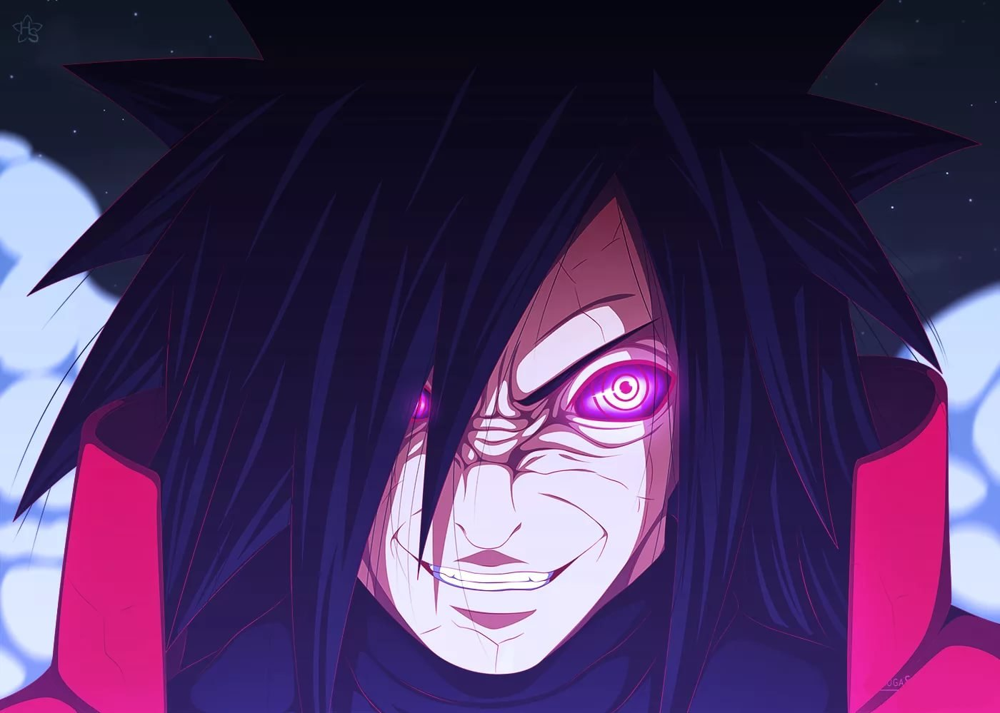
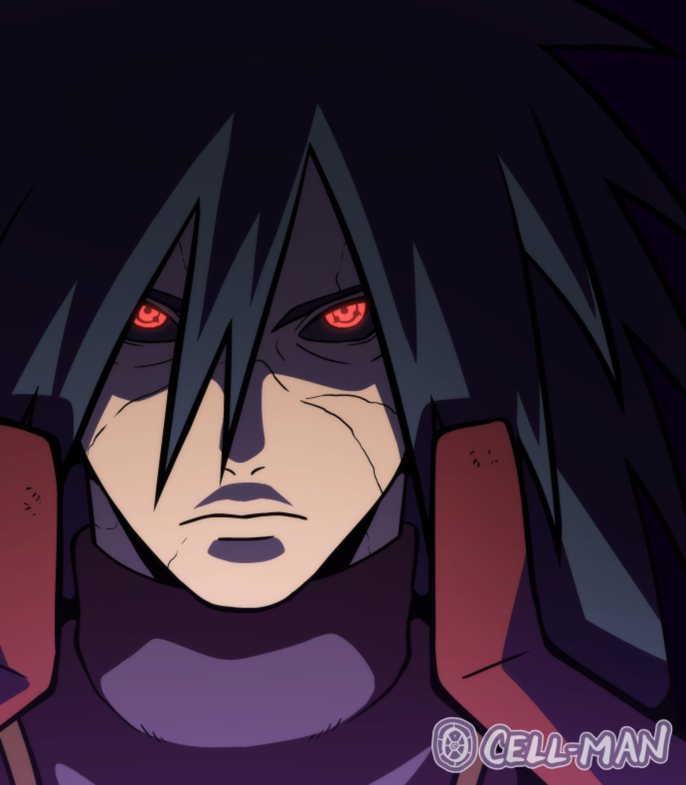
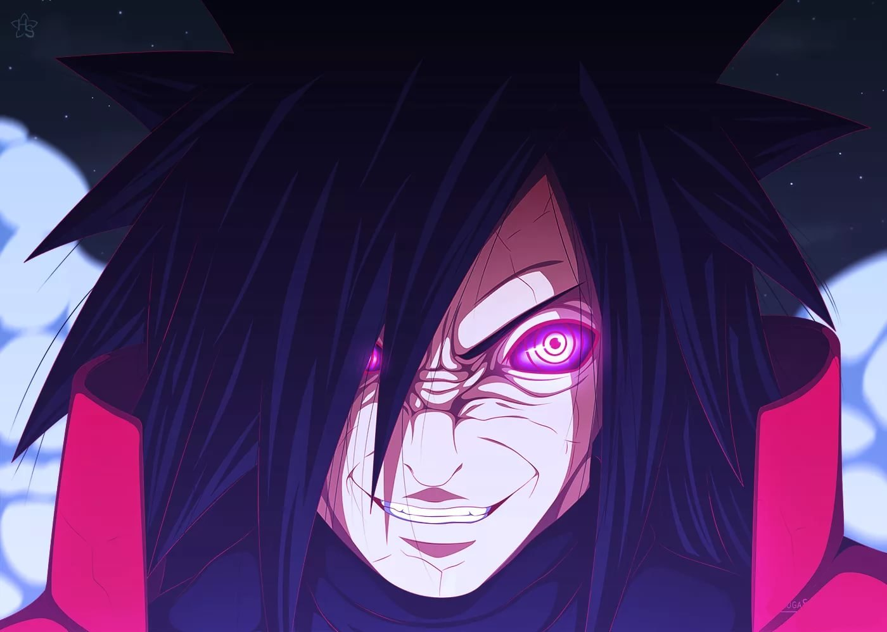

Madara Uchiha
 



Мадара Учиха (яп. うちはマダラ, Учиха Мадара) был легендарным лидером клана Учиха. Он основал Деревню Скрытого Листа вместе со своим другом и соперником, Хаширамой Сенджу, с намерением положить начало мирной эпохе. Когда они двое разошлись во взглядах, как именно достичь этого мира, то сразились за главенство над деревней в битве, которая завершилась смертью Мадары. Тем не менее, впоследствии, он переписал свою смерть и стал скрываться от мира, чтобы продолжать работу над своими планами. Как оказалось, Мадара был не в состоянии завершить их на протяжении своей природной жизни, поэтому доверил свои знания и стремления Обито Учихе незадолго до своей настоящей смерти. Года спустя, Мадара был воскрешен, но в конце концов встретил окончательный провал своих планов, прежде чем повторно умереть
Family
Izuna Uchiha
Изуна Учиха был гармоничным и преданным человеком.[1] Он также проявлял дух соперничества по отношению к своему брату, Мадаре, в плане мастерства, поскольку они часто устраивали спарринги между собой с целью отточить свои навыки. Изуна восхищался Мадарой и даже с трудом поверил, когда ещё в детстве Мадара признал, что он слабее Хаширамы.[3] Кроме того, Изуна был в восторге, когда Мадара пробудил свой Шаринган вскоре после этого.[4] Когда он подрос, любовь Изуны к его клану выросла и он отчаянно боролся в стремлении защитить его. Вскоре он начал разделять мнение своего клана касательно клана Сенджу, даже попросив Мадару, будучи тяжело раненым, не поддаваться на "лживое" предложение о перемирии Хаширамы.[5] Он возвышал своего старшего брата и был так близок с Мадарой, что даже отдал ему свои глаза в качестве прощального подарка, чтобы удостовериться, что Мадара будет в силах защитить будущее их клана.[6]
Tajima-Uchiha
Таджима был спокойным человеком. Кроме того, Таджима возлагал большие надежды на Мадару, уважая его решение избежать сражения с Сенджу, отметив, что у него, вероятно, нет шансов против Хаширамы в настоящее время.[3] Как и Буцума Сенджу, он стремился получить информацию от своих врагов, используя отношения своего сына с Хаширамой, и хотя это в конечном счёте не удалось, он, тем не менее, был удовлетворён тем, что в результате Мадара пробудил Шаринган.[4] Также он и Буцума были очень похожи в результате их непрерывных боёв, и в мастерстве, и мышлении, и именно поэтому, вероятно, их столкновения заходили в тупик с каждым разом. Они даже разделяли, не колеблясь, желание убить потомков друг друга только лишь для того, чтобы создать возможность напасть друг на друга.[5] Также он обладал благородной личностью. Несмотря на то, что Мадара шпионил за Сенджу, но не получил никакой полезной информации, он всё же был счастлив за то, что Мадара был в состоянии пробудить свой Шаринган через сильные эмоции